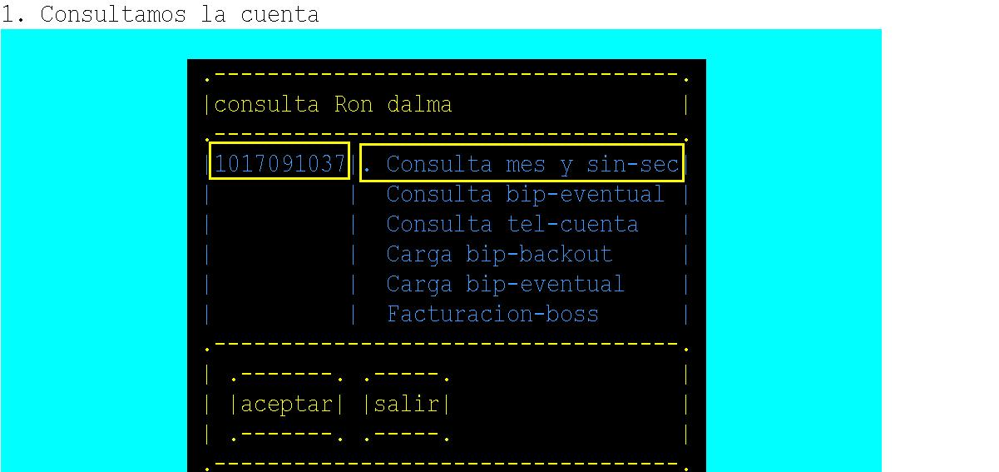
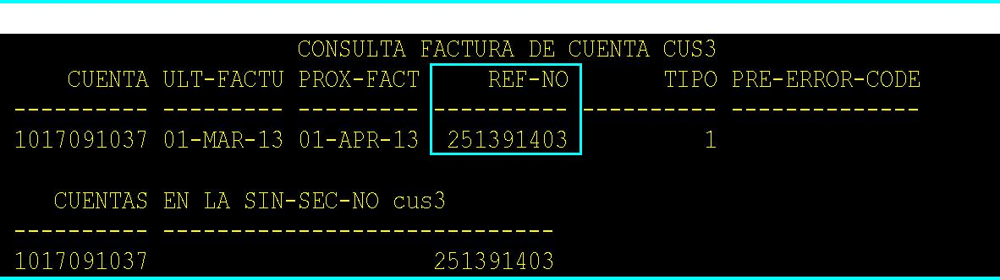
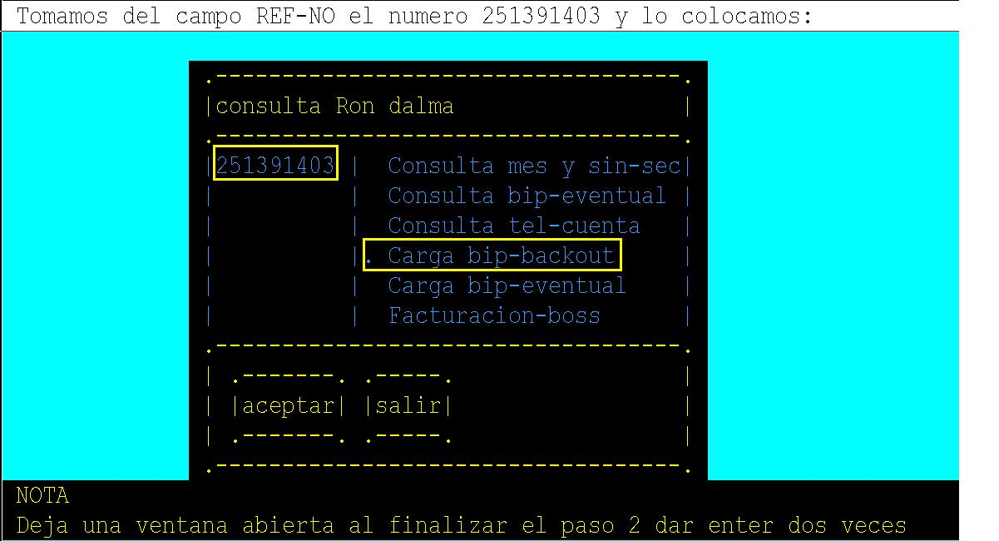
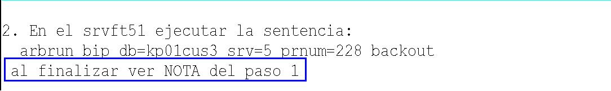

Menu Mainframe
➔
Menu CAPI
➔
Gerencia Sistemas Gestión Empresarial
Normas y procedimentos para el usuario de Ambiente
Bip / Backup
Efectuar los siguientes pasos:




FIN DEL PROCESO
 Menu Mainframe➔
Menu CAPI➔
Menu Mainframe➔
Menu CAPI➔